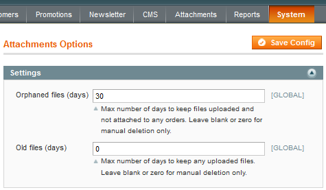
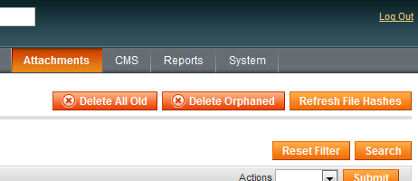
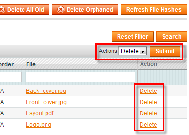

<?xml version="1.0" encoding="UTF-8"?><rss version="2.0"
	xmlns:content="http://purl.org/rss/1.0/modules/content/"
	xmlns:wfw="http://wellformedweb.org/CommentAPI/"
	xmlns:dc="http://purl.org/dc/elements/1.1/"
	xmlns:atom="http://www.w3.org/2005/Atom"
	xmlns:sy="http://purl.org/rss/1.0/modules/syndication/"
	xmlns:slash="http://purl.org/rss/1.0/modules/slash/"
	>

<channel>
	<title>Obsolete files &#8211; Magento web-to-print &amp; dynamic imaging</title>
	<atom:link href="http://www.zetaprints.com/magentohelp/tag/obsolete-files/feed/" rel="self" type="application/rss+xml" />
	<link>http://www.zetaprints.com/magentohelp</link>
	<description>Just another WordPress site</description>
	<lastBuildDate>Fri, 07 Jun 2013 06:55:21 +0000</lastBuildDate>
	<language>en-US</language>
	<sy:updatePeriod>hourly</sy:updatePeriod>
	<sy:updateFrequency>1</sy:updateFrequency>
	<generator>https://wordpress.org/?v=4.4.1</generator>
	<item>
		<title>Delete old attachments</title>
		<link>http://www.zetaprints.com/magentohelp/delete-old-attachments/</link>
		<pubDate>Mon, 04 Apr 2011 16:24:50 +0000</pubDate>
		<dc:creator><![CDATA[atanas]]></dc:creator>
				<category><![CDATA[Dynamic attachments plugin]]></category>
		<category><![CDATA[Delete]]></category>
		<category><![CDATA[Obsolete files]]></category>

		<guid isPermaLink="false">http://www.zetaprints.com/magentohelp/?p=12447</guid>
		<description><![CDATA[Attached files can be deleted manually through the admin interface or automatically on a schedule to prevent disk space filling up. Web to print files can be large in size clogging the hard drive and degrading performance. File attachments can take up significant amount of storage space over time. Not all files uploaded using the [&#8230;]]]></description>
				<content:encoded><![CDATA[<p>Attached files can be deleted manually through the admin interface or automatically on a schedule to prevent disk space filling up. Web to print files can be large in size clogging the hard drive and degrading performance.</p>
<p><span id="more-12447"></span></p>
<p>File attachments can take up significant amount of storage space over time. Not all files uploaded using the <a title="Magento Dynamic file attachments extension" href="https://www.magentocommerce.com/magento-connect/dynamic-file-attachments.html" target="_self">Dynamic File Attachments extension</a> end up as being part of  an order. Sometimes customers upload files but never finish the order. Also,  after certain period of time most of uploaded  files are no longer needed. These files are obsolete and only fill up hard drives. We are  handling these files as 2 cases:</p>
<ul>
<li> <strong>Orphaned</strong> &#8211; files that do not belong to an order. They were uploaded but the order was never finalized</li>
<li><strong>Old</strong> &#8211; files that may or may not be part of orders but have been uploaded some time ago</li>
</ul>
<h2>Deletion settings</h2>
<p>These settings affect manual and scheduled  <a title="Setup cron jobs in Magento" href="../../../../setup-cron-jobs/" target="_self">cron jobs</a> to delete <em>orphaned</em> and <em>old</em> files. Navigate to <em>Magento admin panel &gt; Attachments (top menu) &gt; Attachments Settings</em> (<em>also available through System &gt; Configuration &gt; Attachments Options &gt; Settings</em>) and set number of days for <em>orphaned</em> and <em>old</em> files to be kept before deletion.</p>
<div style="display: table;">
<p></p>
<div style="position: relative; top: 15px; display: inline;">By default the extension is set to  delete <em>orphaned</em> files after 30 days and not to delete <em>old</em> files at all.</div>
</div>
<p>Setting a value of 0 (or leaving the field empty) means  that those type of files will never be deleted.</p>
<p>Bare  in mind that <strong>old</strong> files include both orphaned files and files used in  orders. If you specify value for old files that is <strong>equal or less</strong> than  the value set for <strong>orphaned</strong> files, the latter is simply ignored since ALL  files will be deleted by the former setting anyway.</p>
<h2>Manual deletion of outdated files</h2>
<p>Since <a title="Setup cron jobs in Magento" href="../../setup-cron-jobs/" target="_self">setting up cron jobs</a> in some environments is not that simple there  is the option of running the same process via admin interface.</p>
<div style="display: table;">
<p></p>
<div style="position: relative; top: 15px; display: inline;">Navigate to <em>Magento admin panel &gt; Attachments (top menu) &gt; Manage Attachments</em> and chose weather you want to delete all <strong>Old</strong> or just <strong>Orphaned</strong> files.</div>
</div>
<p>This will fire off same procedure as <a title="Setup cron jobs in Magento" href="../../setup-cron-jobs/" target="_self">auto-deleting</a> auto-deleting option. Same periods  are taken into account. If there are files old enough to be deleted, you  will get a message with number of files being deleted. If there are no  old enough files you will get &#8220;<em>No old enough files found</em>&#8221; message and a  link to <strong>Attachment Settings</strong> page, where you can adjust periods for file  deletion.</p>
<h2>Manual deletion of selected files</h2>
<p>Regardless of weather attachments qualify for scheduled deletion, they can also be deleted from inside Magento admin panel manually.</p>
<div style="display: table;">
<p></p>
<div style="position: relative; top: 15px; display: inline;">Navigate to <em>Magento admin panel &gt; Attachments (top menu) &gt; Manage Attachments</em> and click <strong>Delete</strong> link for the specific attachment file or delete multiple files at once using the bulk actions drop-down.</div>
</div>
]]></content:encoded>
			</item>
	</channel>
</rss>

<!-- Localized -->